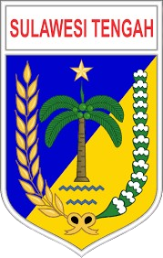

WORKSHOP NASIONAL
BADAN LAYANAN UMUM DAERAH DAN KESIAPAN RUMAH SAKIT DALAM
MENGHADAPI TRANSFORMASI INA-CBG KEDALAM I-DRG

BADAN LAYANAN UMUM DAERAH DAN KESIAPAN RUMAH SAKIT DALAM
MENGHADAPI TRANSFORMASI INA-CBG KEDALAM I-DRG

Gubernur Sulawesi Tengah

Wakil Gubernur Sulawesi Tengah
Berani Wujudkan Sulawesi Tengah Maju dan Berkelanjutan.
KASUBDIT BLUD Direktorat Jendral Bina Keuangan Daerah Kementrian Dalam Negeri

Ketua Sub Tim Koding Kementerian Kesehatan Republik Indonesia (Kemenkes)

Kepala Sub Pelayanan Rekam Medis RSUP Persahabatan

Perekam Medis Ahli Muda RSUP Dr. Hasan Sadikin Bandung